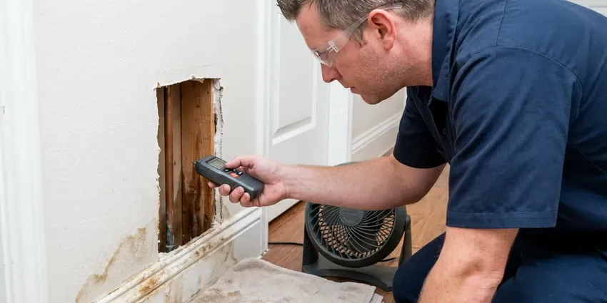

Water Softener Maintenance in Montpelier, VT
Spots on dishes again in Montpelier, VT? Our plumbers clean brine tanks, test hardness and reset your softener valve in a single visit.
- Free On-Site Hardness Test
- Quick, Local Service
- Fast, Reliable Service
- Licensed Technicians
Need Water Softener Maintenance in Montpelier, VT?
Schedule your maintenance appointment with CKV Plumbing now and enjoy the benefits of a properly working water softener system.
Your Go-To for Water Softener Maintenance in Montpelier, VT
CKV Plumbing services salt-based ion exchange softeners, dual-tank systems and salt-free conditioners. We test incoming and treated water hardness, clean the brine tank, inspect the injector and screens and program regeneration around your household size and water use.
Our expertise includes:
- Valve lubrication and system tuning
- Brine Tank Inspection and Cleanout
- Resin Bed Cleaning and Renewal

Additional Plumbing Maintenance Services in Montpelier, VT
Our maintenance and specialty plumbing services in Montpelier, VT catch small problems before they become emergencies.


Customers
Why Choose CKV Plumbing for Water Softener Maintenance in Montpelier, VT?
We bring hardness test kits and set your system based on real numbers, not guesses. That cuts salt and keeps your water consistently soft.
- Extended Lifespan, Proper care prevents premature wear and tear, greatly extending the life of your water softener unit.
- Healthier Appliances, Soft water reduces mineral deposits in dishwashers, washing machines and water heaters, helping them last longer.
- Better Water, Make sure your home consistently receives truly soft water, improving bathing and cleaning.
Citywide Coverage
CKV Plumbing proudly serves every neighborhood of Montpelier and the surrounding areas for water softener maintenance. No matter where you are in Montpelier, our skilled plumbers are ready to provide prompt and professional service.
Experienced Team
Each CKV Plumbing technician is carefully vetted and continuously trained on various water softener brands and models. Their experience means your system receives the precise care it needs for long-term reliability.
Safety-First Approach
Safety and adherence to local plumbing codes are paramount in all our water softener maintenance services. We make sure every adjustment and repair meets or exceeds Vermont regulations, providing you peace of mind.
Trusted Certified Montpelier Plumbing Services Professionals
At CKV Plumbing, we take pride in providing certified plumbing services throughout Montpelier, VT. Backed by recognized industry credentials, our experienced plumbers combine technical skill with genuine customer care. Whether it is repair, installation, or maintenance, we follow strict safety and quality standards to deliver lasting results you can trust.
Call Us Now PHCC Plumbing Contractor Recognition
PHCC Plumbing Contractor Recognition Better Business Bureau (BBB) Accreditation
Better Business Bureau (BBB) Accreditation Angi Certified Pro
Angi Certified Pro ISO 9001 Quality Management Certification
ISO 9001 Quality Management CertificationComplete Water Softener Maintenance Services in Montpelier, VT
Brine Tank Cleaning and Salt Bridge Removal in Montpelier, VT
The brine tank is crucial for salt dissolution and regeneration. Over time, salt residue and other impurities can build up, forming a 'salt bridge' that prevents the system from properly regenerating. Our maintenance service includes thorough cleaning of the brine tank and removal of any salt bridges, so your system can draw brine effectively for full softening. This is a frequent issue we address in Montpelier homes.

Salt-Free Conditioner Maintenance in Montpelier
Template assisted crystallization and other salt-free conditioners do not remove hardness but change how it behaves. They still need media replacement every few years and sediment prefilter changes much more often. We inspect the media tank, replace prefilters and check bypass valves. We also explain plainly how these systems differ from a true softener.
Annual Maintenance Plans in Montpelier, VT
For lasting peace of mind and long-term savings, consider our annual water softener maintenance plans. These plans ensure your system receives regular, scheduled check-ups, often including priority scheduling and discounts on repairs. It's the best way to protect your investment and keep soft water flowing in your Montpelier, VT home or business.
Valve and Controller Diagnostics in Montpelier, VT
The control valve and electronic controller regulate the entire softening process. Our technicians perform diagnostic checks to confirm these components are operating accurately, adjusting programming as needed. We check for wear and tear on moving parts and lubricate them to prevent future issues, keeping your water softener reliable in Montpelier, VT.
Maintenance Versus New Softener Costs in Montpelier, VT
A maintenance visit usually costs far less than a new system, which often runs $1,200 to $3,500 installed. Resin rebedding typically costs $300 to $700 and can bring an older tank back to full capacity. Most quality softeners last 10 to 15 years with service. We will tell you when a repair makes sense and when a replacement is the smarter investment.
Brine Tank Cleaning and Inspection in Montpelier, VT
Over time, sludge and insoluble materials can build up in your brine tank, hindering the softening process. Our maintenance includes thoroughly cleaning the brine tank, inspecting for any cracks or leaks and ensuring the float valve operates correctly. This step is crucial for the efficient regeneration of your water softener in Montpelier, VT.
Commercial Softener Maintenance in Montpelier
Restaurants, laundromats, salons and car washes rely on soft water to protect equipment like dishwashers, ice machines and boilers. Commercial twin-tank systems regenerate often and need closer attention. We set up scheduled visits to test hardness, clean brine tanks and service valves. Consistent maintenance keeps equipment warranties valid and lowers repair costs.

Resin Bed Analysis and Regeneration in Montpelier
The resin bed is the heart of your water softener, where ion exchange occurs. During maintenance, we analyze the condition of the resin beads and confirm the regeneration cycles are programmed correctly for your household's water usage. Proper resin bed function is key to steady soft water throughout your home in Montpelier.
Fast Water Softener Maintenance Near Me in Montpelier, VT
Our team knows the hardness levels typical of Montpelier water and the systems most homes use. We tailor settings to your water and family size. You get softer water and less wasted salt use.
Looking for reliable 'water softener maintenance near me' in Montpelier, VT? CKV Plumbing is your local solution. Our team is well positioned to provide prompt and efficient service to homes and businesses throughout the area. We focus on quick response times and expert care, so your water softener issues are resolved swiftly.
CKV Plumbing at a Glance
- Licensed and insured plumbers serving Montpelier, VT
- 24/7 emergency service with same-day scheduling
- Upfront, flat-rate pricing before work begins
- 4.8-star rated by 553+ Vermont customers
Montpelier Map
Montpelier Information
- Population
- 7,991
- Area codes
- Local
- Service area
- Montpelier and communities within 40 miles
- Nearby
- Barre, St. Johnsbury, Essex Junction, South Burlington
A large share of Vermont homes rely on private wells, and well water here can range from soft to fairly hard depending on the bedrock. Softeners in Montpelier, VT need regular service to keep scale from damaging fixtures and water heaters.
Expert Services
Trust our professionals for reliable CKV Plumbing solutions in Montpelier, VT.
Our Specialized Plumbing Services in Montpelier, VT
At CKV Plumbing, we provide a complete range of plumbing services across Montpelier, VT. From leak detection to full system installations, our team ensures fast, precise, and affordable service for both residential and commercial properties. Explore our core services below:


How Our Water Softener Maintenance Service Works in Montpelier, VT
At CKV Plumbing, our water softener maintenance process is designed for thoroughness and efficiency, so your system delivers its best performance.
Request a Quote
Call (802) 209-5139 and tell us the brand and age of your softener if you know them. We give you a flat price and schedule a time that works.
Test and Service
We test your water hardness, clean the brine tank and service the control valve and injector. We also check resin performance and bypass valve operation.
Program and Verify
We set regeneration to match your water and usage, then run a manual regeneration. A final hardness test confirms your water is soft.
Frequently Asked Questions About Water Softener Maintenance in Montpelier
A standard softener service visit usually runs $125 to $250. Valve rebuilds typically add $100 to $250 and resin replacement costs $300 to $700.
CKV Plumbing services all major brands of water softeners, including but not limited to Fleck, Culligan, Kenmore, GE, EcoPure, Morton and Whirlpool. Our technicians are trained on a broad variety of models and control systems, providing expert care for your specific unit.
Generally, routine maintenance and minor repairs on an existing water softener do not require a plumbing permit in Montpelier. However, if major modifications or a full replacement of the system are needed, a permit might be required. We always ensure compliance with local codes.
A salt bridge is a hard crust that forms in the brine tank, preventing salt from dissolving into the water. This means the system can't regenerate properly, leading to hard water. Our maintenance service includes breaking up and removing salt bridges, bringing back your softener's function.
Routine water softener maintenance usually does not require a permit in Montpelier, VT. However, if a major component replacement or a new installation is needed, permits might be required. We will tell you if any permits are necessary for your specific service.
Common signs include a return of hard water symptoms such as mineral spots on dishes, dry skin and hair, or scale buildup on fixtures. You might also notice your softener using more salt than usual, odd noises or the system not regenerating properly. Don't wait for a total failure.
Look for spots on dishes, scale on faucets, stiff laundry or soap that will not lather. Salt that never goes down in the brine tank is another clear sign.
You can add salt, break small bridges and run manual regenerations. Valve rebuilds, injector cleaning and resin work are better left to a plumber with the right parts.
What People Are Saying About Our Plumbing Experts?

Sofia M.
Two new toilets installed in one visit, no mess left behind, and the tech even adjusted a faucet he noticed was dripping. Fair pricing and really friendly.
Toilet Installation · Shelburne, VT
Daniel K.
A pipe burst at 11 pm and they actually answered. The plumber showed up within the hour, shut everything down, and had us back to normal the next morning. Could not ask for more.
Emergency Plumbing · Barre, VT
James P.
Our commercial plumbing system had a leak under the sink, and CKV Plumbing handled it professionally. The plumbers arrived quickly and restored everything without disruption to our customers.
Commercial Plumbing · St. Johnsbury, VTLaura S.
I scheduled a water heater replacement, and the team made the process smooth and affordable. The new unit works perfectly, and they cleaned up after completing the job.
Water Heater Replacement · Shelburne, VT
Mark T.
When our office needed drain cleaning, CKV Plumbing provided quick, reliable service. The plumber arrived on time and made sure every drain flowed perfectly before leaving. Very satisfied.
Drain Cleaning · Middlebury, VTRobert G.
The trenchless sewer replacement saved our front yard. They walked us through the camera inspection footage first so we knew exactly what we were paying for.
Sewer Line Replacement · Middlebury, VT